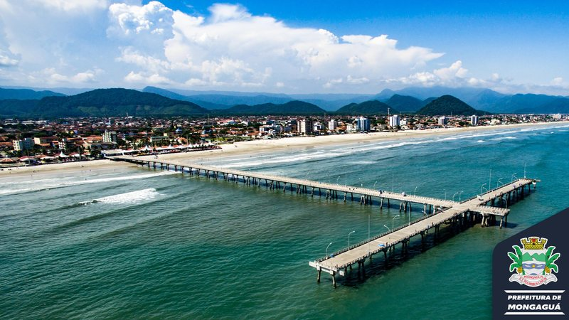

Mongaguá
A cidade de Mongaguá oferece uma experiência mais tranquila no litoral sul paulista, sendo conhecida por seu ambiente calmo e acolhedor.
Com praias extensas e menos movimentadas, a cidade se destaca por proporcionar maior sossego em comparação a outros municípios da região.
Entre seus principais atrativos está a Plataforma de Pesca de Mongaguá, considerada uma das maiores da América Latina.
Além disso, Mongaguá conta com áreas verdes e espaços voltados ao lazer ao ar livre, favorecendo atividades em contato com a natureza.
Assim, com bairros tranquilos e uma infraestrutura voltada ao essencial, Mongaguá pode ser o lugar ideal para quem busca qualidade de vida e proximidade com o mar.
